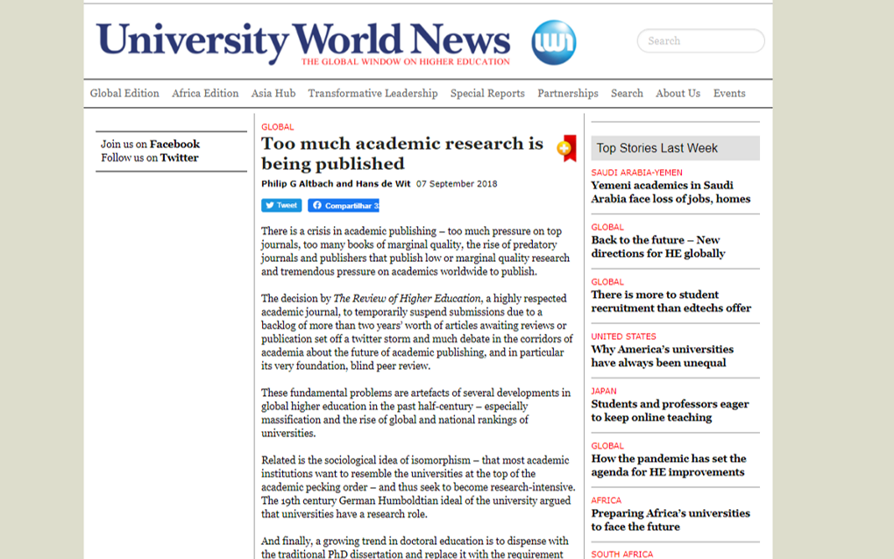
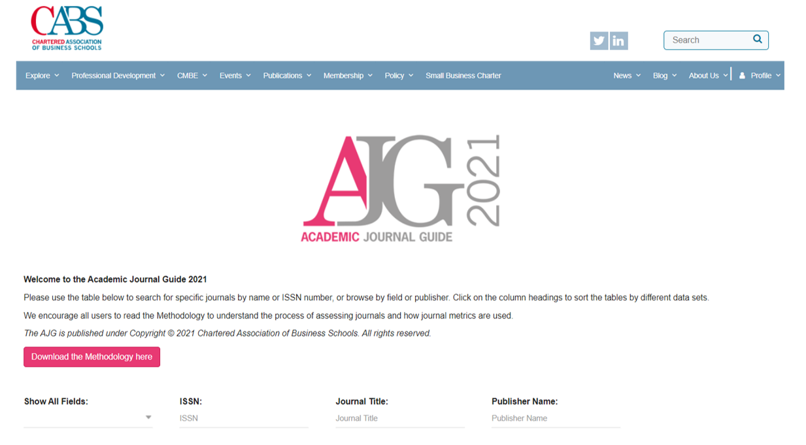
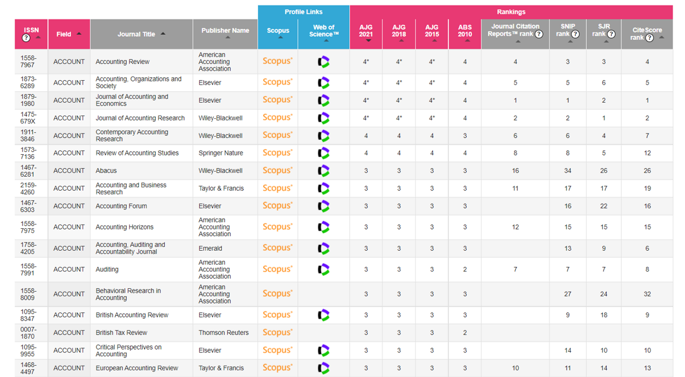

Talk Research Internationalization (UFSM)
My opinions do not represent those of the institution I work for.
I am a young scholar. What the H do I know?
The current state
Too many articles…
… in low-quality journals.
Scholars are doing their best
- To get “tenure” (not a common concept in Brazil yet)
- To increase reputation
- High competitive environment (mental health is a problem)
Journals are doing their best to increase impact
- Game of metrics
- High competitive environment for journals
Too many articles
Brazil 60k scientific articles in 2018: data.worldbank
World 2.554K scientific articles in 2018: data.worldbank
Production of academic research is not a problem anymore.

Production of academic research is not a problem anymore. Source.

Production of academic research is not a problem anymore. Source.
International Standards
ABS List (Site)

International Standards
ABS List (Site)

International Standards
ABS List (Site)
- A short (messy!) list.
Focus is on:
ABS 4* (too competitive)
ABS 4 (highly competitive)
ABS 3 (competitive)
ABS 2 (there are good journals here)
ABS 1 (there might be a few good journals here)
An international ranking list has several advantages over a national one.
International movements
Open science
” Open science encompasses unhindered access to scientific articles, access to data from public research, and collaborative research enabled by ICT tools and incentives.
Broadening access to scientific publications and data is at the heart of open science, so that research outputs are in the hands of as many as possible, and potential benefits are spread as widely as possible” (OCDE).
É um movimento internacional, já presente em vários campos de pesquisa, com o objetivo de tornar a pesquisa acadêmica mais transparente, acessível e relevante.
Exemplo mais recente: Dados de COVID (link).
International movements
Open science
Open code
Open data
Open peer review
Data repositories
- Need data? Mendeley data, Dataverse, Data in Brief, …
Check this project:
Networks & Conferences
I could not stress more the importance of network, international contacts, and international co-authors…
- Many relationships are established during a conference
- Pay attention to how many accents are there in a conference
- Best way to understand what is the current game
- For instance, Finance: Causal Inference Methods
- Every section gives, at least, one good idea (and many bad ones)
Pay attention to the questions that senior scholars make
- They know better than you, if they don’t know the answer, it is always nice to provide one (if possible)
- Plus, your article will likely have an international audience
Papers about writing papers
Shepherd DA, Wiklund J. Simple Rules, Templates, and Heuristics! An Attempt to Deconstruct the Craft of Writing an Entrepreneurship Paper. Entrepreneurship Theory and Practice. 2020;44(3):371-390. doi
Jason A. Colquitt and Gerard George, 2011: Publishing in AMJ—Part 1: Topic Choice. AMJ, 54, 432–435, doi
- Part II, Part III, …
For Students
If you are playing the quantity game, you are playing it wrong, in my opinion.
- Focus on quality, your whole 40-year career is a 20-ABS3 papers, not a 200+ papers
- Understand the concept of a Job Market Paper
- Doesn’t need to be published by the end of your PhD, but senior enough to nice presentations
- Without one, your chances are lower.
For Students
- Create a single project
- You, yourself, and you alone
- It shows that you execute all parts of a project
- Also, helps to understand how to be a better tutor in the future
- Your supervisor, better than anyone, will understand
- Spend time on the letter
- sometimes, the response letter has more pages than the article
For Faculty
The major output a professor can have is the positions their students get.
Students are future co-authors
- Likely they’ll know the literature better
The best articles, most likely, come during your career, not during the PhD of your student.
Brazilian standards need to change from a short-term (i.e., 4 years students) to a long-term mindset (i.e., relationship with the student and future outcomes).
- Helps thinking more about quality than quantity.